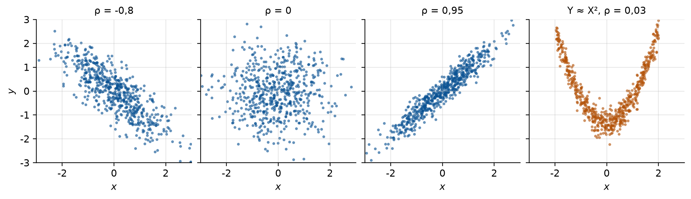
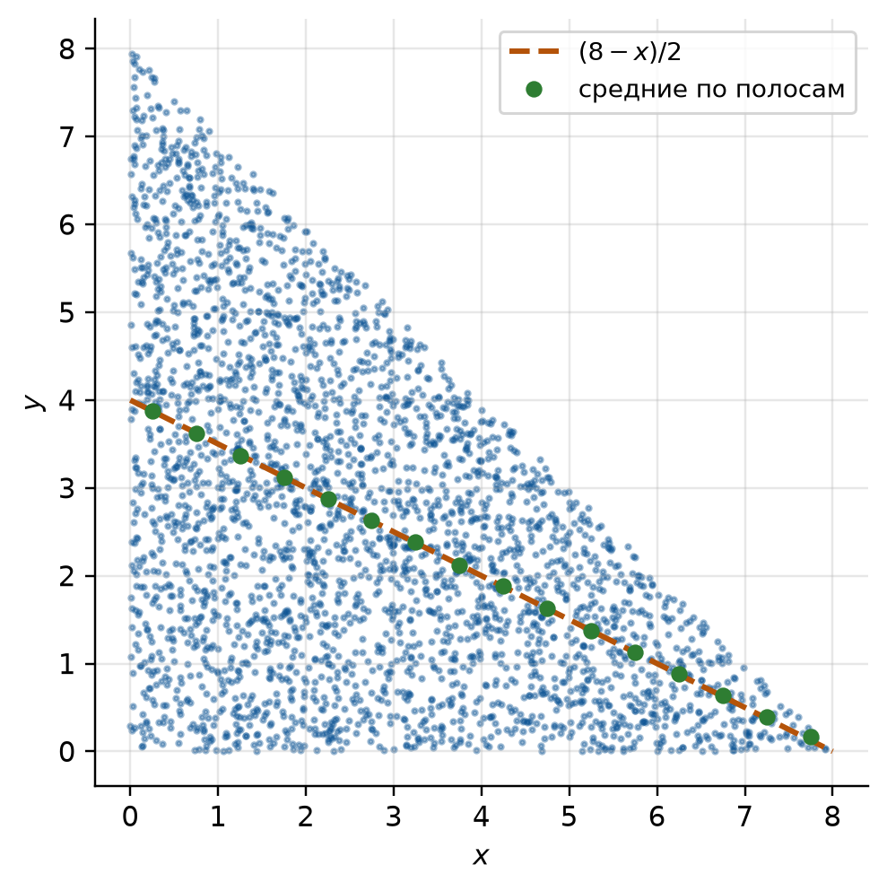
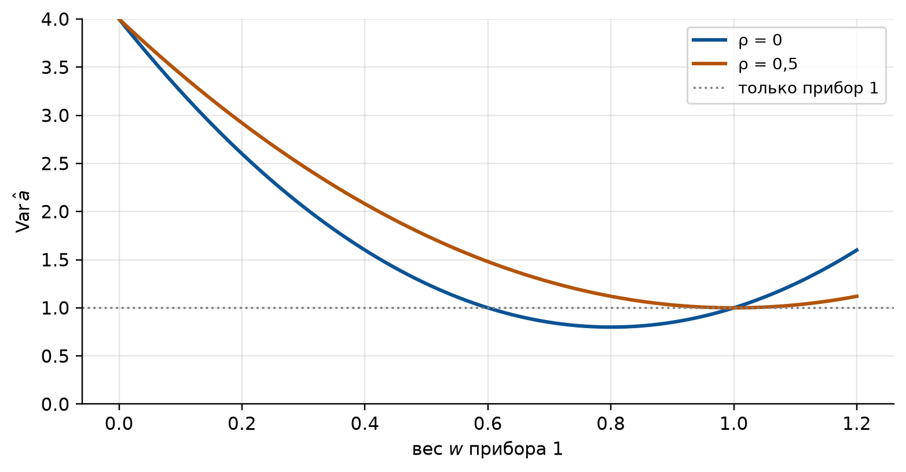

import numpy as np
import matplotlib.pyplot as plt
import sympy as sp
from fractions import Fraction as F
from scipy import integrate
# Оформление графиков: шрифт с кириллицей и палитра, различимая при печати
PALETTE = ["#0b5394", "#b45309", "#2e7d32", "#7b1fa2", "#c62828", "#00838f"]
plt.rcParams.update({
"font.family": "sans-serif",
"font.sans-serif": ["DejaVu Sans", "Liberation Sans", "Noto Sans", "sans-serif"],
"axes.unicode_minus": False,
"axes.prop_cycle": plt.cycler(color=PALETTE),
"axes.spines.top": False,
"axes.spines.right": False,
"axes.grid": True,
"grid.alpha": 0.3,
"figure.dpi": 110,
"figure.constrained_layout.use": True,
})
# Генератор случайных чисел с фиксированным зерном: результаты воспроизводимы
rng = np.random.default_rng(2026)
# Символьные переменные для выкладок
x, y = sp.symbols("x y", real=True)
rho_s, r_s = sp.symbols("rho r", positive=True)
def table_marginals(P):
"""Законы составляющих по таблице P (строки: значения Y, столбцы: значения X).
Возвращает (p_X, p_Y): суммы по столбцам и по строкам.
"""
P = np.asarray(P, dtype=object)
return list(P.sum(axis=0)), list(P.sum(axis=1))
def table_moments(xs, ys, P):
"""E, Var, Cov и коэффициент корреляции дискретной пары по таблице P.
P[j][i] = P(X = xs[i], Y = ys[j]). Всё, кроме rho, считается точно.
"""
px, py = table_marginals(P)
ex = sum(a * p for a, p in zip(xs, px))
ey = sum(b * p for b, p in zip(ys, py))
vx = sum(a * a * p for a, p in zip(xs, px)) - ex**2
vy = sum(b * b * p for b, p in zip(ys, py)) - ey**2
exy = sum(xs[i] * ys[j] * P[j][i] for j in range(len(ys)) for i in range(len(xs)))
cov = exy - ex * ey
return {"E(X)": ex, "E(Y)": ey, "Var(X)": vx, "Var(Y)": vy,
"E(XY)": exy, "Cov": cov, "rho": float(cov) / float(vx * vy) ** 0.5}
def sample_table(xs, ys, P, n):
"""n независимых пар (X, Y) с совместным законом из таблицы P."""
probs = np.array(P, dtype=float).ravel()
cells = rng.choice(probs.size, size=n, p=probs / probs.sum())
j, i = np.divmod(cells, len(xs))
return np.array(xs, dtype=float)[i], np.array(ys, dtype=float)[j]
def moments2d(f, x_lim, y_lim):
"""E, Var, Cov и rho для плотности f(x, y) в области x_lim, y_lim (sympy).
x_lim = (a, b) числа; y_lim = (c(x), d(x)) могут зависеть от x.
Ключ "норм" должен быть равен 1.
"""
def mean(g):
return sp.simplify(sp.integrate(g * f, (y, *y_lim), (x, *x_lim)))
ex, ey = mean(x), mean(y)
vx = sp.simplify(mean(x**2) - ex**2)
vy = sp.simplify(mean(y**2) - ey**2)
cov = sp.simplify(mean(x * y) - ex * ey)
return {"норм": mean(1), "E(X)": ex, "E(Y)": ey, "Var(X)": vx, "Var(Y)": vy,
"Cov": cov, "rho": sp.simplify(cov / sp.sqrt(vx * vy))}
def sample_triangle(n, a):
"""n точек, равномерно распределённых в треугольнике x > 0, y > 0, x + y < a.
Точку из квадрата, попавшую выше диагонали, отражаем: (u, v) -> (1 - u, 1 - v).
"""
u, v = rng.random(n), rng.random(n)
flip = u + v > 1
u[flip], v[flip] = 1 - u[flip], 1 - v[flip]
return a * u, a * v
def sample_disk(n, r):
"""n точек, равномерно распределённых в круге радиуса r (метод отбора)."""
pts = rng.uniform(-r, r, size=(int(1.4 * n) + 100, 2))
pts = pts[(pts**2).sum(axis=1) <= r * r][:n]
return pts[:, 0], pts[:, 1]
def sample_stats(xs, ys):
"""Выборочные средние, дисперсии, ковариация и корреляция пары массивов."""
c = np.cov(xs, ys, ddof=0)
return {"E(X)": xs.mean(), "E(Y)": ys.mean(), "Var(X)": c[0, 0],
"Var(Y)": c[1, 1], "Cov": c[0, 1], "rho": c[0, 1] / np.sqrt(c[0, 0] * c[1, 1])}
def show(exact, sampled, keys=("E(X)", "E(Y)", "Var(X)", "Var(Y)", "Cov", "rho")):
"""Печатает точные значения рядом с выборочными, по строке на величину."""
for k in keys:
print(f"{k:>7}: точно {float(exact[k]):9.4f} симуляция {sampled[k]:9.4f}")
def correlated_normal(n, rho):
"""n пар стандартных нормальных величин с коэффициентом корреляции rho."""
z1, z2 = rng.standard_normal(n), rng.standard_normal(n)
return z1, rho * z1 + np.sqrt(1 - rho**2) * z2
def combined_variance(w, s1, s2, rho):
"""Дисперсия оценки w*X1 + (1 - w)*X2 по двум приборам с ошибками s1, s2."""
return w**2 * s1**2 + (1 - w)**2 * s2**2 + 2 * w * (1 - w) * rho * s1 * s25 Семинар 5. Системы двух случайных величин
Теория вероятностей и математическая статистика · НИЯУ МИФИ
Скачать PDF-раздатку этого семинара
5.1 Код для этой главы
Все импорты и функции, которые используются в примерах главы, собраны в одной ячейке. Выполните её первой. Остальные ячейки опираются на неё.
5.2 Краткая сводка
До сих пор каждое испытание давало одно число. Часто важно смотреть на несколько чисел сразу: рост и вес человека, размер воротника и длина рукава, две координаты точки попадания. По отдельности законы роста и веса не говорят, как они связаны: высокий человек обычно тяжелее, но вес по росту однозначно не определяется. Эту связь и описывает совместный закон пары \((X, Y)\). Геометрически \((X, Y)\) есть случайная точка на плоскости.
Уведомление
Обозначения. В главе используются стандартные обозначения. У лектора и в задачнике то же самое записано иначе:
| Здесь | Лекция | Гмурман |
|---|---|---|
| \(F_X(x)\), \(f_X(x)\) | \(F_1(x)\), \(f_1(x)\) | \(F_1(x)\), \(f_1(x)\) |
| \(f_{X\mid Y}(x \mid y)\) | \(f(x/y)\) | \(\varphi(x \mid y)\) |
| \(f_{Y\mid X}(y \mid x)\) | \(f(y/x)\) | \(\psi(y \mid x)\) |
| \(\E(X)\), \(\Var(X)\) | \(m_x = M[X]\), \(D_x\) | \(M(X)\), \(D(X)\) |
| \(\Cov(X, Y)\) | \(K_{xy}\) | \(\mu_{xy}\) |
| \(\rho(X, Y)\) | \(r_{xy}\) | \(r_{xy}\) |
| \(\Sigma\) | \(\hat K\) |
Функция распределения, как и раньше, \(F(x) = \Prob(X < x)\) со строгим неравенством (так у лектора и в задачнике). Для непрерывных величин разницы с \(\leqslant\) нет.
5.2.1 Совместный закон
Функция распределения пары: \[ F(x, y) = \Prob(X < x,\ Y < y), \tag{5.1}\] вероятность того, что точка \((X, Y)\) попадёт в квадрант левее и ниже точки \((x, y)\). Свойства:
- \(0 \leqslant F \leqslant 1\), \(F\) не убывает по каждому аргументу;
- \(F(-\infty, y) = F(x, -\infty) = 0\), \(F(+\infty, +\infty) = 1\);
- \(F(x, +\infty) = F_X(x)\), \(F(+\infty, y) = F_Y(y)\): «отпустив» одну координату, получаем закон другой.
Вероятность попасть в прямоугольник \([x_1, x_2) \times [y_1, y_2)\) даёт формула включения-исключения: из большого квадранта вычитаем два лишних, а квадрант, вычтенный дважды, возвращаем: \[ \Prob(x_1 \leqslant X < x_2,\ y_1 \leqslant Y < y_2) = F(x_2, y_2) - F(x_1, y_2) - F(x_2, y_1) + F(x_1, y_1). \tag{5.2}\]
Дискретная пара задаётся таблицей \(p_{ij} = \Prob(X = x_i, Y = y_j)\), \(\sum_{i,j} p_{ij} = 1\). Непрерывная пара задаётся плотностью \[ f(x, y) = \frac{\partial^2 F(x, y)}{\partial x\,\partial y}, \qquad F(x, y) = \int_{-\infty}^{x}\!\int_{-\infty}^{y} f(u, v)\,dv\,du, \tag{5.3}\] \[ \Prob\big((X, Y) \in D\big) = \iint_D f(x, y)\,dx\,dy, \qquad f \geqslant 0, \qquad \iint_{\mathbb R^2} f(x, y)\,dx\,dy = 1. \tag{5.4}\] Плотность есть «поверхность распределения»: вероятность области равна объёму под этой поверхностью. Если плотность постоянна в области \(D\) и равна нулю вне её, закон называют равномерным в \(D\): тогда \(f = 1/S_D\) и вероятность любой части \(D\) пропорциональна её площади.
5.2.2 Составляющие и условные законы
Маргинальные (безусловные) законы составляющих получаются суммированием или интегрированием по «лишней» переменной: \[ p_i = \Prob(X = x_i) = \sum_j p_{ij}, \qquad f_X(x) = \int_{-\infty}^{\infty} f(x, y)\,dy, \qquad f_Y(y) = \int_{-\infty}^{\infty} f(x, y)\,dx. \tag{5.5}\] Обратно нельзя: по \(f_X\) и \(f_Y\) совместный закон, вообще говоря, не восстановить. Не хватает информации о связи.
Условный закон \(X\) при \(Y = y\) описывает, как распределён \(X\) среди тех испытаний, где \(Y\) принял значение \(y\): \[ \Prob(X = x_i \mid Y = y_j) = \frac{p_{ij}}{\Prob(Y = y_j)}, \qquad f_{X\mid Y}(x \mid y) = \frac{f(x, y)}{f_Y(y)}. \tag{5.6}\] Это теорема умножения \(\Prob(AB) = \Prob(B)\Prob(A \mid B)\), записанная для величин: \[ f(x, y) = f_X(x)\,f_{Y\mid X}(y \mid x) = f_Y(y)\,f_{X\mid Y}(x \mid y). \tag{5.7}\] Условный закон есть «срез» совместного по прямой \(Y = y\), нормированный так, чтобы площадь под ним равнялась единице. Его среднее, условное математическое ожидание, считается ниже, в Уравнение 5.11.
Независимость. \(X\) и \(Y\) независимы, если условный закон одной не зависит от значения другой: \(f_{X\mid Y}(x \mid y) = f_X(x)\). Из Уравнение 5.7 это равносильно \[ f(x, y) = f_X(x)\,f_Y(y) \quad\Longleftrightarrow\quad F(x, y) = F_X(x)\,F_Y(y) \quad\Longleftrightarrow\quad p_{ij} = p_i\,p_j \ \text{для всех } i, j. \tag{5.8}\] Независимость взаимна: если \(X\) не зависит от \(Y\), то и \(Y\) не зависит от \(X\). Удобный признак (задача 8): если \(f(x, y) = g(x)\,h(y)\) в прямоугольнике (и ноль вне его), величины независимы.
5.2.3 Числовые характеристики
Среднее функции от пары считается по совместному закону: \[ \E\,g(X, Y) = \sum_{i,j} g(x_i, y_j)\,p_{ij}, \qquad \E\,g(X, Y) = \iint g(x, y)\,f(x, y)\,dx\,dy. \tag{5.9}\]
Средние и дисперсии составляющих получаются отсюда при \(g(x, y) = x\). Считать можно двумя путями: сразу по совместному закону или сначала найти маргинальный закон Уравнение 5.5. Результат один и тот же: \[ \E X = \sum_i\sum_j x_i\,p_{ij} = \sum_i x_i\,p_i, \qquad \E X = \iint x\,f(x, y)\,dx\,dy = \int_{-\infty}^{\infty} x\,f_X(x)\,dx, \tag{5.10}\] \[ \Var X = \E X^2 - (\E X)^2, \qquad \E X^2 = \sum_{i,j} x_i^2\,p_{ij} = \iint x^2 f(x, y)\,dx\,dy, \] и так же для \(Y\) (с \(y_j\), \(f_Y\)). Двойной интеграл удобен, когда маргинальная плотность получается громоздкой; маргинальная удобна, когда она уже найдена.
Условное математическое ожидание: среднее условного закона. \[ \begin{aligned} \E(Y \mid X = x_i) &= \sum_j y_j\,\Prob(Y = y_j \mid X = x_i) = \frac{\sum_j y_j\,p_{ij}}{p_i},\\ \E(Y \mid X = x) &= \int_{-\infty}^{\infty} y\,f_{Y\mid X}(y \mid x)\,dy = \frac{\int y\,f(x, y)\,dy}{f_X(x)}. \end{aligned} \tag{5.11}\] Это число для каждого значения \(x\), то есть функция от \(x\). Её график называют линией регрессии \(Y\) на \(X\): как в среднем меняется \(Y\), когда меняется \(X\) (задачи 2, 6, 7). Аналогично определяется условная дисперсия, разброс \(Y\) около линии регрессии: \[ \Var(Y \mid X = x) = \E(Y^2 \mid X = x) - \big[\E(Y \mid X = x)\big]^2. \] Если \(X\) и \(Y\) независимы, условный закон совпадает с безусловным, и \(\E(Y \mid X = x) = \E Y\) при всех \(x\): линия регрессии горизонтальна.
Формула полного математического ожидания (аналог формулы полной вероятности): общее среднее есть среднее условных средних, взвешенных по закону условия. \[ \E Y = \sum_i \E(Y \mid X = x_i)\,p_i, \qquad \E Y = \int_{-\infty}^{\infty} \E(Y \mid X = x)\,f_X(x)\,dx. \tag{5.12}\] Коротко: \(\E Y = \E\big[\E(Y \mid X)\big]\). Пример: если средний вес мужчин 80 кг, женщин 65 кг, а мужчин в группе 40 %, то средний вес группы \(80\cdot0{,}4 + 65\cdot0{,}6 = 71\) кг.
Ковариация (у лектора: корреляционный момент): \[ \Cov(X, Y) = \E\big[(X - \E X)(Y - \E Y)\big] = \E(XY) - \E(X)\,\E(Y). \tag{5.13}\] Вторая форма удобнее для счёта, как \(\Var(X) = \E(X^2) - (\E X)^2\).
Смысл знака. Если \(X\) выше своего среднего, а \(Y\) при этом обычно тоже выше своего, произведение отклонений чаще положительно: \(\Cov > 0\). Если большим \(X\) отвечают малые \(Y\), \(\Cov < 0\).
Но величина \(\Cov\) зависит от единиц: рост в сантиметрах вместо метров умножит её на 100. Безразмерная мера связи есть коэффициент корреляции: \[ \rho(X, Y) = \frac{\Cov(X, Y)}{\sigma(X)\,\sigma(Y)}, \qquad -1 \leqslant \rho \leqslant 1. \tag{5.14}\] \(|\rho| = 1\) тогда и только тогда, когда \(Y = aX + b\) (знак \(\rho\) равен знаку \(a\); задача 11). \(\rho\) измеряет тесноту линейной связи: величины с \(\rho = 0\) называют некоррелированными.
Важное уведомление
Независимые величины некоррелированы. Обратное неверно. Если \(X\) и \(Y\) независимы, то \(\E(XY) = \E(X)\E(Y)\) и \(\Cov = 0\). Но \(\Cov = 0\) означает только отсутствие линейной связи: величины могут быть жёстко связаны нелинейно (задачи 3 и 9). Исключение: для нормального закона на плоскости некоррелированность равносильна независимости (семинар 6).
fig, axes = plt.subplots(1, 4, figsize=(10, 2.8), sharex=True, sharey=True)
for ax, rho in zip(axes[:3], [-0.8, 0.0, 0.95]):
zx, zy = correlated_normal(600, rho)
ax.scatter(zx, zy, s=4, alpha=0.5, color=PALETTE[0])
ax.set_title(f"ρ = {rho:g}".replace(".", ","), fontsize=10)
zx = rng.uniform(-2, 2, 600)
zy = zx**2 - 4 / 3 + 0.3 * rng.standard_normal(600)
axes[3].scatter(zx, zy, s=4, alpha=0.5, color=PALETTE[1])
axes[3].set_title(f"Y ≈ X², ρ = {np.corrcoef(zx, zy)[0, 1]:.2f}".replace(".", ","), fontsize=10)
for ax in axes:
ax.set_xlim(-3, 3)
ax.set_ylim(-3, 3)
ax.set_xlabel("$x$")
axes[0].set_ylabel("$y$")
plt.show()
5.2.4 Свойства среднего, дисперсии и ковариации
Для любых величин и чисел \(a, b, c\): \[ \E(aX + bY + c) = a\E X + b\E Y + c \qquad \text{(независимость не нужна)}, \tag{5.15}\] \[ \Var(aX + bY + c) = a^2\Var X + b^2\Var Y + 2ab\,\Cov(X, Y). \tag{5.16}\] Ковариация линейна по каждому аргументу и симметрична: \[ \begin{gathered} \Cov(aX + bY, Z) = a\Cov(X, Z) + b\Cov(Y, Z), \qquad \Cov(X, Y) = \Cov(Y, X), \\ \Cov(X, X) = \Var X, \qquad \Cov(X, c) = 0. \end{gathered} \tag{5.17}\] Из определения ещё \(\E(XY) = \E X\,\E Y + \Cov(X, Y)\), а для независимых \(\Var(XY) = \Var X\,\Var Y + (\E X)^2\Var Y + (\E Y)^2\Var X\).
Сумма некоррелированных величин: \(\Var(X + Y) = \Var X + \Var Y\). Отсюда главный практический вывод: ошибки складываются квадратами, и среднее \(n\) независимых измерений имеет дисперсию в \(n\) раз меньше.
5.2.5 Ковариационная матрица
Для вектора \(\mathbf X = (X_1, \dots, X_n)\) все дисперсии и ковариации собирают в ковариационную матрицу (у лектора: корреляционная матрица \(\hat K\)) \[ \Sigma = \big(\Cov(X_i, X_j)\big)_{i,j=1}^n, \qquad \Sigma_{ii} = \Var X_i. \tag{5.18}\] Она определяется \(n\) средними, \(n\) дисперсиями и \(n(n-1)/2\) различными ковариациями. Обобщение Уравнение 5.16 на \(n\) слагаемых, в матричной записи: \[ \Var\Big(\sum_i a_i X_i + b\Big) = \sum_i a_i^2\Var X_i + 2\sum_{i<j} a_i a_j\Cov(X_i, X_j) = \mathbf a^{\mathsf T}\Sigma\,\mathbf a. \tag{5.19}\]
Отсюда свойства и смысл \(\Sigma\):
- \(\Sigma\) симметрична, на диагонали дисперсии;
- \(\Sigma\) неотрицательно определена: \(\mathbf a^{\mathsf T}\Sigma\mathbf a \geqslant 0\), потому что это дисперсия;
- \(\Sigma\) вырождена (\(\det\Sigma = 0\)) ровно тогда, когда некоторая комбинация \(\sum a_iX_i\) есть константа: точка \(\mathbf X\) лежит в плоскости меньшей размерности (задача 10);
- у некоррелированных величин \(\Sigma\) диагональна;
- матрица корреляций \(R = (\rho(X_i, X_j))\): та же \(\Sigma\) после перехода к стандартизованным величинам \(X_i/\sigma_i\), на диагонали единицы.
Геометрически \(\Sigma\) задаёт форму облака точек: собственные векторы указывают главные оси эллипса рассеяния, а собственные значения равны дисперсиям вдоль этих осей.
5.3 Блок A. Дискретная пара
5.3.1 Задача 1 (Гмурман, гл. 8 § 2, № 421)
Задана дискретная двумерная случайная величина \((X, Y)\):
| \(Y \backslash X\) | \(2\) | \(5\) | \(8\) |
|---|---|---|---|
| \(0{,}4\) | 0,15 | 0,30 | 0,35 |
| \(0{,}8\) | 0,05 | 0,12 | 0,03 |
Найти: а) безусловные законы распределения составляющих; б) условный закон распределения составляющей \(X\) при условии, что составляющая \(Y\) приняла значение \(0{,}4\); в) условный закон распределения \(Y\) при условии, что \(X = 5\).
СоветРешение
а) Закон \(X\): суммы по столбцам; закон \(Y\): суммы по строкам.
| \(X\) | 2 | 5 | 8 |
|---|---|---|---|
| \(p\) | 0,20 | 0,42 | 0,38 |
| \(Y\) | 0,4 | 0,8 |
|---|---|---|
| \(p\) | 0,80 | 0,20 |
Контроль: \(0{,}20 + 0{,}42 + 0{,}38 = 1\), \(0{,}80 + 0{,}20 = 1\).
б) Берём строку \(Y = 0{,}4\) и делим на её сумму \(\Prob(Y = 0{,}4) = 0{,}80\): \[ \Prob(X = 2 \mid Y = 0{,}4) = \frac{0{,}15}{0{,}80} = \frac{3}{16}, \quad \Prob(X = 5 \mid Y = 0{,}4) = \frac{0{,}30}{0{,}80} = \frac38, \quad \Prob(X = 8 \mid Y = 0{,}4) = \frac{0{,}35}{0{,}80} = \frac{7}{16}. \] Контроль: \(3/16 + 6/16 + 7/16 = 1\).
в) Столбец \(X = 5\), его сумма \(0{,}42\): \(\Prob(Y = 0{,}4 \mid X = 5) = 0{,}30/0{,}42 = 5/7\), \(\Prob(Y = 0{,}8 \mid X = 5) = 0{,}12/0{,}42 = 2/7\).
Зависимы ли \(X\) и \(Y\)? Да: условный закон \(X\) при \(Y = 0{,}4\) (\(3/16 \approx 0{,}19\) для \(X = 2\)) отличается от безусловного (\(0{,}20\)). Достаточно одной клетки, где \(p_{ij} \ne p_i p_j\): \(0{,}15 \ne 0{,}20\cdot0{,}80 = 0{,}16\).
Проверка: точные дроби.
P421 = [[F(15, 100), F(30, 100), F(35, 100)],
[F(5, 100), F(12, 100), F(3, 100)]]
px, py = table_marginals(P421)
print("закон X:", [str(p) for p in px], " закон Y:", [str(p) for p in py])
print("X | Y=0,4:", [str(p / py[0]) for p in P421[0]])
print("Y | X=5: ", [str(P421[j][1] / px[1]) for j in range(2)])
print("p(2; 0,4) =", P421[0][0], " p_X(2)·p_Y(0,4) =", px[0] * py[0])закон X: ['1/5', '21/50', '19/50'] закон Y: ['4/5', '1/5']
X | Y=0,4: ['3/16', '3/8', '7/16']
Y | X=5: ['5/7', '2/7']
p(2; 0,4) = 3/20 p_X(2)·p_Y(0,4) = 4/25
ПредупреждениеТипичная ошибка
Делить строку на 1 вместо её суммы, то есть принять \(p_{ij}\) за условную вероятность. Контроль «условный закон в сумме даёт 1» ловит это сразу.
УведомлениеДля самопроверки
Гмурман, № 409: найти законы составляющих по таблице
| \(Y \backslash X\) | 26 | 30 | 41 | 50 |
|---|---|---|---|---|
| 2,3 | 0,05 | 0,12 | 0,08 | 0,04 |
| 2,7 | 0,09 | 0,30 | 0,11 | 0,21 |
Ответ: \(X\): 0,14; 0,42; 0,19; 0,25. \(Y\): 0,29; 0,71.
5.3.2 Задача 2
Для пары \((X, Y)\) из задачи 1 найти \(\E X\), \(\E Y\), \(\Var X\), \(\Var Y\), \(\Cov(X, Y)\) и \(\rho(X, Y)\). Найти условные средние \(\E(X \mid Y = 0{,}4)\) и \(\E(X \mid Y = 0{,}8)\). Согласуется ли их соотношение со знаком ковариации?
СоветРешение
По законам составляющих из задачи 1: \[ \E X = 2\cdot0{,}20 + 5\cdot0{,}42 + 8\cdot0{,}38 = 5{,}54, \qquad \E X^2 = 4\cdot0{,}20 + 25\cdot0{,}42 + 64\cdot0{,}38 = 35{,}62, \] \[ \Var X = 35{,}62 - 5{,}54^2 = 4{,}9284, \qquad \sigma(X) = 2{,}22; \] \[ \E Y = 0{,}4\cdot0{,}8 + 0{,}8\cdot0{,}2 = 0{,}48, \qquad \Var Y = 0{,}16\cdot0{,}8 + 0{,}64\cdot0{,}2 - 0{,}48^2 = 0{,}0256, \qquad \sigma(Y) = 0{,}16. \] \(\E(XY)\) считается по совместной таблице (см. Уравнение 5.9), по строкам: \[ \E(XY) = 0{,}4\,(2\cdot0{,}15 + 5\cdot0{,}30 + 8\cdot0{,}35) + 0{,}8\,(2\cdot0{,}05 + 5\cdot0{,}12 + 8\cdot0{,}03) = 0{,}4\cdot4{,}6 + 0{,}8\cdot0{,}94 = 2{,}592. \] \[ \Cov(X, Y) = 2{,}592 - 5{,}54\cdot0{,}48 = -0{,}0672, \qquad \rho = \frac{-0{,}0672}{2{,}22\cdot0{,}16} = -\frac{7}{37} \approx -0{,}189. \]
Условные средние по Уравнение 5.11, через условные законы (\(3/16, 3/8, 7/16\) из задачи 1 и \(0{,}05/0{,}2\), \(0{,}12/0{,}2\), \(0{,}03/0{,}2\)): \[ \E(X \mid Y = 0{,}4) = 2\cdot\tfrac{3}{16} + 5\cdot\tfrac38 + 8\cdot\tfrac{7}{16} = 5{,}75, \qquad \E(X \mid Y = 0{,}8) = 2\cdot0{,}25 + 5\cdot0{,}6 + 8\cdot0{,}15 = 4{,}7. \] При большем \(Y\) среднее \(X\) меньше: связь отрицательная, как и знак \(\Cov\). Но \(|\rho| \approx 0{,}19\) мал: линейная связь слабая.
Контроль: \(\E X = \E(X \mid Y = 0{,}4)\cdot0{,}8 + \E(X \mid Y = 0{,}8)\cdot0{,}2 = 4{,}6 + 0{,}94 = 5{,}54\). Это формула полного математического ожидания Уравнение 5.12.
Проверка: точный расчёт по таблице и симуляция \(10^6\) пар.
xs421, ys421 = [F(2), F(5), F(8)], [F(2, 5), F(4, 5)]
exact = table_moments(xs421, ys421, P421)
print({k: str(v) if isinstance(v, F) else round(v, 4) for k, v in exact.items()})
sx, sy = sample_table(xs421, ys421, P421, 1_000_000)
show(exact, sample_stats(sx, sy))
print("E(X | Y=0,4) =", sx[sy == 0.4].mean().round(3), " E(X | Y=0,8) =", sx[sy == 0.8].mean().round(3)){'E(X)': '277/50', 'E(Y)': '12/25', 'Var(X)': '12321/2500', 'Var(Y)': '16/625', 'E(XY)': '324/125', 'Cov': '-42/625', 'rho': -0.1892}
E(X): точно 5.5400 симуляция 5.5363
E(Y): точно 0.4800 симуляция 0.4800
Var(X): точно 4.9284 симуляция 4.9370
Var(Y): точно 0.0256 симуляция 0.0256
Cov: точно -0.0672 симуляция -0.0672
rho: точно -0.1892 симуляция -0.1890
E(X | Y=0,4) = 5.746 E(X | Y=0,8) = 4.696
ПредупреждениеТипичная ошибка
Считать \(\E(XY)\) как \(\E X\cdot\E Y\), то есть по маргинальным законам. Тогда ковариация всегда выходит нулём. Произведение средних равно среднему произведения только для некоррелированных величин; в общем случае нужна совместная таблица.
5.3.3 Задача 3
\(X\) принимает значения \(-1\), \(0\), \(1\) с вероятностями \(1/3\) каждое, \(Y = X^2\). Составить таблицу совместного закона \((X, Y)\). Найти \(\Cov(X, Y)\). Зависимы ли \(X\) и \(Y\)?
СоветРешение
\(Y\) принимает значения 0 (при \(X = 0\)) и 1 (при \(X = \pm1\)):
| \(Y \backslash X\) | \(-1\) | \(0\) | \(1\) |
|---|---|---|---|
| \(0\) | 0 | 1/3 | 0 |
| \(1\) | 1/3 | 0 | 1/3 |
\(\E X = 0\), \(\E(XY) = \E X^3 = (-1 + 0 + 1)/3 = 0\), поэтому \(\Cov(X, Y) = 0 - 0\cdot\E Y = 0\): величины некоррелированы.
Но они зависимы, и предельно сильно: \(Y\) есть функция от \(X\). Формально: \(\Prob(X = 0, Y = 1) = 0\), а \(\Prob(X = 0)\,\Prob(Y = 1) = \tfrac13\cdot\tfrac23 \ne 0\).
Причина: связь симметричная, «парабола». При \(X > 0\) и при \(X < 0\) отклонения \(Y\) одинаковы, и положительные произведения \((X - \E X)(Y - \E Y)\) компенсируются отрицательными. Ковариация видит только наклон прямой, проведённой через облако, а у параболы этот наклон нулевой.
Проверка: точные дроби.
P3 = [[F(0), F(1, 3), F(0)], [F(1, 3), F(0), F(1, 3)]]
m3 = table_moments([F(-1), F(0), F(1)], [F(0), F(1)], P3)
px3, py3 = table_marginals(P3)
print("Cov =", m3["Cov"], " P(X=0, Y=1) =", P3[1][1], " P(X=0)·P(Y=1) =", px3[1] * py3[1])Cov = 0 P(X=0, Y=1) = 0 P(X=0)·P(Y=1) = 2/95.4 Блок B. Функция распределения, плотность, условные плотности
5.4.1 Задача 4 (Гмурман, гл. 8 § 1, № 411)
Найти вероятность попадания случайной точки \((X, Y)\) в прямоугольник, ограниченный прямыми \(x = 1\), \(x = 2\), \(y = 3\), \(y = 5\), если известна функция распределения \[ F(x, y) = \begin{cases} 1 - 2^{-x} - 2^{-y} + 2^{-x-y} & \text{при } x \geqslant 0,\ y \geqslant 0,\\ 0 & \text{при } x < 0 \text{ или } y < 0. \end{cases} \]
СоветРешение
По Уравнение 5.2 с \(x_1 = 1\), \(x_2 = 2\), \(y_1 = 3\), \(y_2 = 5\). Счёт упрощается, если заметить разложение \[ F(x, y) = (1 - 2^{-x})(1 - 2^{-y}) = F_X(x)\,F_Y(y). \] Тогда четыре слагаемых Уравнение 5.2 собираются в произведение приращений: \[ \Prob = \big(F_X(2) - F_X(1)\big)\big(F_Y(5) - F_Y(3)\big) = \Big(\frac12 - \frac14\Big)\Big(\frac18 - \frac1{32}\Big) = \frac14\cdot\frac{3}{32} = \frac{3}{128} \approx 0{,}0234. \]
Разложение \(F = F_X F_Y\) по Уравнение 5.8 означает, что \(X\) и \(Y\) независимы. Каждая из них показательна: \(F_X(x) = 1 - 2^{-x} = 1 - e^{-x\ln 2}\), \(\lambda = \ln 2\) (семинар 4).
Проверка: подстановка в Уравнение 5.2 без разложения и симуляция.
F411 = 1 - 2**-x - 2**-y + 2**(-x - y)
p_rect = (F411.subs({x: 2, y: 5}) - F411.subs({x: 1, y: 5})
- F411.subs({x: 2, y: 3}) + F411.subs({x: 1, y: 3}))
sx = rng.exponential(1 / np.log(2), 2_000_000)
sy = rng.exponential(1 / np.log(2), 2_000_000)
p_sim = ((sx > 1) & (sx < 2) & (sy > 3) & (sy < 5)).mean()
print(f"по формуле {sp.nsimplify(p_rect)} = {float(p_rect):.4f}, симуляция {p_sim:.4f}")по формуле 3/128 = 0.0234, симуляция 0.0236
ПредупреждениеТипичная ошибка
Считать \(\Prob = F(2, 5) - F(1, 3)\), по аналогии с одномерным \(F(b) - F(a)\). Разность двух квадрантов есть «уголок» в форме буквы Г, а не прямоугольник; нужны все четыре вершины.
УведомлениеДля самопроверки
Гмурман, № 410: \(F(x, y) = \sin x\sin y\) при \(0 \leqslant x, y \leqslant \pi/2\). Найти вероятность попадания в прямоугольник \(0 < x < \pi/4\), \(\pi/6 < y < \pi/3\). Ответ: \((\sqrt6 - \sqrt2)/4 \approx 0{,}26\).
5.4.2 Задача 5 (Гмурман, гл. 8 § 1, № 416)
В круге \(x^2 + y^2 \leqslant R^2\) двумерная плотность вероятности \(f(x, y) = C(R - \sqrt{x^2 + y^2})\); вне круга \(f(x, y) = 0\). Найти: а) постоянную \(C\); б) вероятность попадания случайной точки \((X, Y)\) в круг радиуса \(r = 1\) с центром в начале координат, если \(R = 2\).
СоветРешение
Плотность зависит только от расстояния \(\rho = \sqrt{x^2 + y^2}\) до центра, поэтому интегрируем в полярных координатах, \(dx\,dy = \rho\,d\rho\,d\varphi\). Поверхность распределения есть конус высотой \(CR\) над кругом.
а) Нормировка Уравнение 5.4: \[ 1 = C\int_0^{2\pi}\!d\varphi\int_0^R (R - \rho)\rho\,d\rho = 2\pi C\Big(\frac{R^3}{2} - \frac{R^3}{3}\Big) = \frac{\pi C R^3}{3}, \qquad C = \frac{3}{\pi R^3}. \] Это согласуется с формулой объёма конуса: \(\tfrac13\pi R^2\cdot CR = 1\).
б) При \(R = 2\): \(C = 3/(8\pi)\), и \[ \Prob\big(X^2 + Y^2 < 1\big) = \frac{3}{8\pi}\cdot 2\pi\int_0^1 (2 - \rho)\rho\,d\rho = \frac34\Big(1 - \frac13\Big) = \frac12. \] Внутренний круг занимает четверть площади, но получает половину вероятности: плотность выше у центра.
Проверка: интегралы в sympy и Монте-Карло (равномерные точки в круге, взвешенные плотностью).
R_s = sp.Symbol("R", positive=True)
phi = sp.Symbol("phi")
C416 = 1 / sp.integrate((R_s - rho_s) * rho_s, (rho_s, 0, R_s), (phi, 0, 2 * sp.pi))
p416 = sp.integrate(C416.subs(R_s, 2) * (2 - rho_s) * rho_s, (rho_s, 0, 1), (phi, 0, 2 * sp.pi))
dx, dy = sample_disk(2_000_000, 2)
dens = 3 / (8 * np.pi) * (2 - np.hypot(dx, dy))
area = np.pi * 2**2
print("C =", sp.simplify(C416), " P =", p416)
print(f"Монте-Карло: нормировка {area * dens.mean():.4f},"
f" P {area * (dens * (np.hypot(dx, dy) < 1)).mean():.4f}")C = 3/(pi*R**3) P = 1/2
Монте-Карло: нормировка 0.9998, P 0.4993
УведомлениеДля самопроверки
Гмурман, № 419: \(f(x, y) = C/(x^2 + y^2 + 1)^3\) на всей плоскости. Найти \(C\). Ответ: \(C = 2/\pi\).
5.4.3 Задача 6 (Гмурман, гл. 8 § 3, № 428, дополнена)
Непрерывная двумерная случайная величина \((X, Y)\) равномерно распределена внутри прямоугольного треугольника с вершинами \(O(0; 0)\), \(A(0; 8)\), \(B(8; 0)\). Найти: а) двумерную плотность вероятности системы; б) плотности и условные плотности распределения составляющих. Дополнительно: в) найти \(\E(Y \mid X = x)\); г) найти \(\Cov(X, Y)\) и \(\rho(X, Y)\).
СоветРешение
а) Площадь треугольника \(\tfrac12\cdot8\cdot8 = 32\), поэтому \(f(x, y) = 1/32\) при \(x > 0\), \(y > 0\), \(x + y < 8\) и \(0\) вне треугольника.
б) При фиксированном \(x \in (0, 8)\) точка лежит на отрезке \(0 < y < 8 - x\). По Уравнение 5.5 \[ f_X(x) = \int_0^{8 - x}\frac{dy}{32} = \frac{8 - x}{32}, \quad 0 < x < 8; \qquad f_Y(y) = \frac{8 - y}{32}, \quad 0 < y < 8 \ \text{(симметрия)}. \] Обе плотности «треугольные»: у \(x = 0\) сечение длиннее всего. По Уравнение 5.6 \[ f_{Y\mid X}(y \mid x) = \frac{1/32}{(8 - x)/32} = \frac{1}{8 - x}, \quad 0 < y < 8 - x, \] то есть при известном \(X = x\) величина \(Y\) равномерна на \((0, 8 - x)\). Аналогично \(f_{X\mid Y}(x \mid y) = 1/(8 - y)\) на \((0, 8 - y)\).
Условная плотность зависит от \(x\), значит, \(X\) и \(Y\) зависимы, хотя формула \(f = 1/32\) «не содержит» ни \(x\), ни \(y\). Зависимость сидит в границе области: чем больше \(X\), тем меньше места остаётся для \(Y\).
в) Среднее равномерного закона на \((0, 8 - x)\) есть середина отрезка: \[ \E(Y \mid X = x) = \frac{8 - x}{2}. \] Это линия регрессии \(Y\) на \(X\); она убывает, связь отрицательная.
г) \(\E X = \E Y = \int_0^8 x\frac{8 - x}{32}dx = \frac83\), \(\E X^2 = \int_0^8 x^2\frac{8 - x}{32}dx = \frac{32}{3}\), \(\Var X = \frac{32}{3} - \frac{64}{9} = \frac{32}{9}\). \[ \E(XY) = \frac{1}{32}\int_0^8 x\int_0^{8-x} y\,dy\,dx = \frac{1}{64}\int_0^8 x(8 - x)^2dx = \frac{1}{64}\cdot\frac{1024}{3} = \frac{16}{3}, \] \[ \Cov(X, Y) = \frac{16}{3} - \frac{64}{9} = -\frac{16}{9}, \qquad \rho = \frac{-16/9}{32/9} = -\frac12. \]
Проверка: точный расчёт в sympy и симуляция.
exact = moments2d(sp.Rational(1, 32), (0, 8), (0, 8 - x))
print(exact)
tx, ty = sample_triangle(1_000_000, 8)
show(exact, sample_stats(tx, ty)){'норм': 1, 'E(X)': 8/3, 'E(Y)': 8/3, 'Var(X)': 32/9, 'Var(Y)': 32/9, 'Cov': -16/9, 'rho': -1/2}
E(X): точно 2.6667 симуляция 2.6657
E(Y): точно 2.6667 симуляция 2.6642
Var(X): точно 3.5556 симуляция 3.5521
Var(Y): точно 3.5556 симуляция 3.5497
Cov: точно -1.7778 симуляция -1.7721
rho: точно -0.5000 симуляция -0.4991fig, ax = plt.subplots(figsize=(5.2, 4.4))
ax.scatter(tx[:3000], ty[:3000], s=3, alpha=0.4, color=PALETTE[0])
grid = np.linspace(0, 8, 50)
ax.plot(grid, (8 - grid) / 2, "--", color=PALETTE[1], lw=2, label="$(8 - x)/2$")
edges = np.arange(0, 8.01, 0.5)
band = np.digitize(tx, edges) - 1
centers = (edges[:-1] + edges[1:]) / 2
ax.plot(centers, [ty[band == k].mean() for k in range(len(centers))], "o",
color=PALETTE[2], ms=5, label="средние по полосам")
ax.set_xlabel("$x$")
ax.set_ylabel("$y$")
ax.set_aspect("equal")
ax.legend(fontsize=9)
plt.show()
ПредупреждениеТипичная ошибка
Забыть, что пределы интегрирования в Уравнение 5.5 зависят от \(x\), и написать \(f_X(x) = \int_0^8 \frac{dy}{32} = \frac14\). Такая «плотность» в интеграле по \((0, 8)\) даёт 2, а не 1. Сначала нарисуйте область.
УведомлениеДля самопроверки
Гмурман, № 426: \((X, Y)\) равномерна в прямоугольнике \(|x| < a\), \(|y| < b\). Найти \(f\) и плотности составляющих. Независимы ли \(X\) и \(Y\)? Ответ: \(f = 1/(4ab)\), \(f_X = 1/(2a)\), \(f_Y = 1/(2b)\); \(f = f_Xf_Y\), независимы.
5.4.4 Задача 7 (Гмурман, гл. 8 § 3, № 424)
Плотность совместного распределения непрерывной двумерной случайной величины \((X, Y)\) \[f(x, y) = Ce^{-x^2 - 2xy - 4y^2}.\] Найти: а) постоянный множитель \(C\); б) плотности распределения составляющих; в) условные плотности распределения составляющих.
СоветРешение
Всё сводится к интегралу Пуассона \(\int_{-\infty}^{\infty}e^{-a(t - t_0)^2}dt = \sqrt{\pi/a}\) после выделения полного квадрата. Показатель можно сгруппировать двумя способами: \[ x^2 + 2xy + 4y^2 = (x + y)^2 + 3y^2 = 4\Big(y + \frac x4\Big)^2 + \frac34x^2. \]
а), б) Интегрируя по \(x\) с первой группировкой: \[ f_Y(y) = Ce^{-3y^2}\int e^{-(x + y)^2}dx = C\sqrt\pi\,e^{-3y^2}. \] Интегрируя по \(y\) со второй: \[ f_X(x) = Ce^{-3x^2/4}\int e^{-4(y + x/4)^2}dy = C\frac{\sqrt\pi}{2}e^{-3x^2/4}. \] Нормировка \(f_Y\): \(C\sqrt\pi\cdot\sqrt{\pi/3} = 1\), \(C = \sqrt3/\pi\). Итак, \[ f_X(x) = \frac{\sqrt3}{2\sqrt\pi}e^{-3x^2/4}, \qquad f_Y(y) = \frac{\sqrt3}{\sqrt\pi}e^{-3y^2}. \] Обе составляющие нормальны с нулевым средним: \(\Var X = 2/3\) (\(e^{-x^2/(2\sigma^2)}\) при \(2\sigma^2 = 4/3\)) и \(\Var Y = 1/6\).
в) Делим совместную плотность на маргинальные; общие множители сокращаются, и остаются как раз полные квадраты: \[ f_{X\mid Y}(x \mid y) = \frac{1}{\sqrt\pi}e^{-(x + y)^2}, \qquad f_{Y\mid X}(y \mid x) = \frac{2}{\sqrt\pi}e^{-4(y + x/4)^2} = \frac{2}{\sqrt\pi}e^{-(x + 4y)^2/4}. \] Условные законы тоже нормальны: при \(Y = y\) величина \(X\) нормальна со средним \(-y\) и дисперсией \(1/2\); при \(X = x\) величина \(Y\) нормальна со средним \(-x/4\) и дисперсией \(1/8\). Линии регрессии \(\E(X \mid y) = -y\) и \(\E(Y \mid x) = -x/4\) прямые с отрицательным наклоном, а условные дисперсии от условия не зависят. Это и есть нормальный закон на плоскости; его общий вид разбирается на семинаре 6. Здесь \(\rho = -1/2\).
Проверка: sympy, разность с найденными формулами должна быть нулём.
g424 = sp.exp(-x**2 - 2 * x * y - 4 * y**2)
C424 = sp.simplify(1 / sp.integrate(g424, (x, -sp.oo, sp.oo), (y, -sp.oo, sp.oo)))
fx424 = sp.simplify(sp.integrate(C424 * g424, (y, -sp.oo, sp.oo)))
fy424 = sp.simplify(sp.integrate(C424 * g424, (x, -sp.oo, sp.oo)))
print("C =", C424)
print("f_X:", sp.simplify(fx424 - sp.sqrt(3) / (2 * sp.sqrt(sp.pi)) * sp.exp(-3 * x**2 / 4)))
print("f_Y:", sp.simplify(fy424 - sp.sqrt(3 / sp.pi) * sp.exp(-3 * y**2)))
print("f(x|y):", sp.simplify(C424 * g424 / fy424 - sp.exp(-(x + y)**2) / sp.sqrt(sp.pi)))
print("f(y|x):", sp.simplify(C424 * g424 / fx424 - 2 / sp.sqrt(sp.pi) * sp.exp(-(x + 4 * y)**2 / 4)))
cov424 = sp.integrate(x * y * C424 * g424, (x, -sp.oo, sp.oo), (y, -sp.oo, sp.oo))
print("Cov =", sp.simplify(cov424), " rho =", sp.simplify(cov424 / sp.sqrt(sp.Rational(2, 3) * sp.Rational(1, 6))))C = sqrt(3)/pi
f_X: 0
f_Y: 0
f(x|y): 0
f(y|x): 0
Cov = -1/6 rho = -1/2
УведомлениеДля самопроверки
Гмурман, № 423 (разобрана в задачнике): \(f(x, y) = \frac1\pi e^{-(x^2 + 2xy + 5y^2)/2}\). Ответ: \(f_X = \sqrt{2/(5\pi)}\,e^{-0{,}4x^2}\), \(f_Y = \sqrt{2/\pi}\,e^{-2y^2}\), \(f_{X\mid Y}(x \mid y) = \frac{1}{\sqrt{2\pi}}e^{-(x + y)^2/2}\), \(f_{Y\mid X}(y \mid x) = \sqrt{\frac{5}{2\pi}}\,e^{-(x + 5y)^2/10}\).
5.5 Блок C. Ковариация, корреляция, ковариационная матрица
5.5.1 Задача 8 (Гмурман, гл. 8 § 4, № 434 и 437)
а) Доказать: если \(f(x, y) = g(x)\,h(y)\) (в прямоугольнике, вне которого \(f = 0\)), то \(X\) и \(Y\) независимы.
б) Задана плотность совместного распределения непрерывной двумерной случайной величины \((X, Y)\): \(f(x, y) = (1/4)\sin x\sin y\) в квадрате \(0 \leqslant x \leqslant \pi\), \(0 \leqslant y \leqslant \pi\); вне квадрата \(f(x, y) = 0\). Найти математические ожидания и дисперсии составляющих и ковариацию.
СоветРешение
а) Обозначим \(G = \int g(x)\,dx\), \(H = \int h(y)\,dy\). Тогда \(f_X(x) = g(x)H\), \(f_Y(y) = h(y)G\), а нормировка даёт \(\iint gh = GH = 1\). Поэтому \[ f_X(x)\,f_Y(y) = g(x)h(y)\cdot GH = f(x, y), \] и по Уравнение 5.8 величины независимы. Нормирующие множители можно раздать сомножителям как угодно: важен только вид «функция от \(x\) на функцию от \(y\)».
Условие «прямоугольник» существенно: в задаче 6 \(f = 1/32\) тоже «константа на константу», но множитель «быть внутри треугольника» на функцию от \(x\) и функцию от \(y\) не раскладывается.
б) \(f = \tfrac12\sin x\cdot\tfrac12\sin y\) на квадрате, так что \(X\) и \(Y\) независимы, \(f_X(x) = \tfrac12\sin x\) на \([0, \pi]\), и \(\Cov(X, Y) = 0\) без всякого счёта. Плотность \(f_X\) симметрична относительно \(\pi/2\), поэтому \(\E X = \pi/2\). По частям, \(\int_0^\pi x^2\sin x\,dx = \pi^2 - 4\), так что \[ \E X^2 = \frac{\pi^2 - 4}{2}, \qquad \Var X = \frac{\pi^2 - 4}{2} - \frac{\pi^2}{4} = \frac{\pi^2 - 8}{4} \approx 0{,}467. \] Для \(Y\) то же самое.
Опечатка в задачнике. В ответах напечатано \(\Var X = \pi^2 - 4 \approx 5{,}87\). Это невозможно: величина со значениями в \([0, \pi]\) имеет дисперсию не больше \((\pi/2)^2 \approx 2{,}47\). Проверка правдоподобия на порядок величины полезна всегда.
Проверка: точный расчёт и численное интегрирование.
exact = moments2d(sp.sin(x) * sp.sin(y) / 4, (0, sp.pi), (0, sp.pi))
print(exact)
ex_num = integrate.quad(np.sin, 0, np.pi, weight="alg", wvar=(1, 0))[0] / 2
ex2_num = integrate.quad(np.sin, 0, np.pi, weight="alg", wvar=(2, 0))[0] / 2
print(f"численно: E(X) = {ex_num:.4f}, Var(X) = {ex2_num - ex_num**2:.4f};"
f" (pi^2-8)/4 = {(np.pi**2 - 8) / 4:.4f}, в книге pi^2-4 = {np.pi**2 - 4:.4f}"){'норм': 1, 'E(X)': pi/2, 'E(Y)': pi/2, 'Var(X)': -2 + pi**2/4, 'Var(Y)': -2 + pi**2/4, 'Cov': 0, 'rho': 0}
численно: E(X) = 1.5708, Var(X) = 0.4674; (pi^2-8)/4 = 0.4674, в книге pi^2-4 = 5.8696
УведомлениеДля самопроверки
Гмурман, № 435: \(X\) и \(Y\) независимы, \(f_X = 5e^{-5x}\) (\(x > 0\)), \(f_Y = 2e^{-2y}\) (\(y > 0\)). Найти \(f(x, y)\) и \(F(x, y)\). Ответ: \(f = 10e^{-(5x + 2y)}\), \(F = (1 - e^{-5x})(1 - e^{-2y})\) при \(x, y > 0\), иначе 0.
5.5.2 Задача 9 (Гмурман, гл. 8 § 4, № 436)
Непрерывная двумерная случайная величина \((X, Y)\) распределена равномерно в круге радиуса \(r\) с центром в начале координат. Доказать, что \(X\) и \(Y\) зависимы, но некоррелированны.
СоветРешение
\(f = 1/(\pi r^2)\) в круге. При фиксированном \(x\), \(|x| < r\), точка лежит на хорде \(|y| < \sqrt{r^2 - x^2}\), поэтому \[ f_X(x) = \frac{2\sqrt{r^2 - x^2}}{\pi r^2}, \qquad f_{Y\mid X}(y \mid x) = \frac{1}{2\sqrt{r^2 - x^2}}, \quad |y| < \sqrt{r^2 - x^2}. \] Условный закон \(Y\) (равномерный на хорде) зависит от \(x\): при \(x\) близком к \(r\) хорда короткая, и \(Y\) почти наверняка близок к нулю. Значит, \(f_{Y\mid X}(y \mid x) \ne f_Y(y)\), и величины зависимы. Иначе: \(\Prob(X > 0{,}9r,\ Y > 0{,}9r) = 0\), хотя каждая из вероятностей \(\Prob(X > 0{,}9r)\), \(\Prob(Y > 0{,}9r)\) положительна.
Ковариация: по симметрии круга \(\E X = \E Y = 0\) и \[ \Cov(X, Y) = \E(XY) = \iint_{x^2 + y^2 < r^2}\frac{xy}{\pi r^2}\,dx\,dy = 0, \] потому что подынтегральная функция нечётна по \(x\), а область симметрична относительно оси \(Oy\). Величины некоррелированы.
Здесь зависимость проявляется не в среднем, а в разбросе: \(\E(Y \mid X = x) = 0\) при любом \(x\), а \(\Var(Y \mid X = x) = (r^2 - x^2)/3\) убывает с ростом \(|x|\).
Проверка: точный расчёт при \(r = 1\) и симуляция, включая условный разброс.
exact = moments2d(1 / sp.pi, (-1, 1), (-sp.sqrt(1 - x**2), sp.sqrt(1 - x**2)))
print(exact)
cx, cy = sample_disk(1_000_000, 1)
show(exact, sample_stats(cx, cy))
near0, near1 = np.abs(cx) < 0.1, np.abs(cx) > 0.9
print(f"Var(Y | |X| < 0,1) = {cy[near0].var():.4f} Var(Y | |X| > 0,9) = {cy[near1].var():.4f}"){'норм': 1, 'E(X)': 0, 'E(Y)': 0, 'Var(X)': 1/4, 'Var(Y)': 1/4, 'Cov': 0, 'rho': 0}
E(X): точно 0.0000 симуляция -0.0003
E(Y): точно 0.0000 симуляция 0.0001
Var(X): точно 0.2500 симуляция 0.2503
Var(Y): точно 0.2500 симуляция 0.2498
Cov: точно 0.0000 симуляция -0.0002
rho: точно 0.0000 симуляция -0.0009
Var(Y | |X| < 0,1) = 0.3326 Var(Y | |X| > 0,9) = 0.0382
ПредупреждениеТипичная ошибка
Из «\(\Cov = 0\)» заключить «независимы». Ноль ковариации говорит только, что прямая регрессии горизонтальна. Для независимости нужно, чтобы весь условный закон не зависел от условия.
5.5.3 Задача 10
Известно: \(\Var X = 4\), \(\Var Y = 9\), \(\rho(X, Y) = -1/2\). Найти: а) \(\Cov(X, Y)\); б) \(\Var(2X - 3Y + 5)\); в) \(\Cov(X + Y,\ X - Y)\); г) ковариационную матрицу вектора \((X,\ Y,\ X + Y)\) и её определитель. Объяснить, почему он равен нулю.
СоветРешение
а) \(\Cov = \rho\,\sigma_X\sigma_Y = -\tfrac12\cdot2\cdot3 = -3\).
б) Константа 5 сдвигает, но не меняет разброс. По Уравнение 5.16 с \(a = 2\), \(b = -3\): \[ \Var(2X - 3Y) = 4\cdot4 + 9\cdot9 + 2\cdot2\cdot(-3)\cdot(-3) = 16 + 81 + 36 = 133. \] Ковариация отрицательна, а коэффициенты разных знаков, поэтому поправка положительна: \(X\) и \(-Y\) связаны положительно, их колебания складываются.
в) По билинейности Уравнение 5.17: \[ \Cov(X + Y, X - Y) = \Var X - \Cov(X, Y) + \Cov(Y, X) - \Var Y = 4 - 9 = -5. \]
г) \(\Var(X + Y) = 4 + 9 - 6 = 7\), \(\Cov(X, X + Y) = 4 - 3 = 1\), \(\Cov(Y, X + Y) = -3 + 9 = 6\): \[ \Sigma = \begin{pmatrix} 4 & -3 & 1\\ -3 & 9 & 6\\ 1 & 6 & 7 \end{pmatrix}, \qquad \det\Sigma = 0. \] Третья строка есть сумма первых двух, потому что третья величина есть сумма первых двух. На языке Уравнение 5.19: для \(\mathbf a = (1, 1, -1)\) \[ \mathbf a^{\mathsf T}\Sigma\,\mathbf a = \Var\big(X + Y - (X + Y)\big) = \Var(0) = 0. \] Случайная точка \((X, Y, X + Y)\) лежит в плоскости \(z = x + y\), и разброса в направлении нормали \(\mathbf a\) к этой плоскости нет. Нулевое собственное значение \(\Sigma\) отвечает собственному вектору \(\mathbf a\).
Проверка: линейная алгебра и симуляция нормальных \(X\), \(Y\) с заданными параметрами.
Sigma = np.array([[4, -3, 1], [-3, 9, 6], [1, 6, 7]], dtype=float)
a = np.array([2, -3])
print("Var(2X-3Y+5) =", a @ Sigma[:2, :2] @ a, " det =", round(np.linalg.det(Sigma), 10))
eigval, eigvec = np.linalg.eigh(Sigma)
print("собственные значения:", eigval.round(4), " вектор при нуле:", (eigvec[:, 0] / eigvec[0, 0]).round(4))
z1, z2 = correlated_normal(1_000_000, -0.5)
vx, vy = 2 * z1, 3 * z2
print("выборочная Σ:\n", np.cov([vx, vy, vx + vy]).round(2))
print("Var(2X-3Y+5) по выборке:", np.var(2 * vx - 3 * vy + 5).round(2),
" Cov(X+Y, X-Y):", np.cov(vx + vy, vx - vy)[0, 1].round(2))Var(2X-3Y+5) = 133.0 det = 0.0
собственные значения: [-0. 5.6411 14.3589] вектор при нуле: [ 1. 1. -1.]
выборочная Σ:
[[ 4.01 -3. 1. ]
[-3. 8.99 5.99]
[ 1. 5.99 6.99]]
Var(2X-3Y+5) по выборке: 132.9 Cov(X+Y, X-Y): -4.98
ПредупреждениеТипичная ошибка
Писать \(\Var(2X - 3Y) = 2\Var X - 3\Var Y\) или \(4\Var X - 9\Var Y\). Коэффициенты выходят в квадрате, и дисперсии всегда складываются: \(\Var(X - Y) = \Var X + \Var Y - 2\Cov\), а не разность дисперсий.
5.5.4 Задача 11 (Гмурман, гл. 8 § 4, № 438, дополнена)
а) Доказать, что \(|\rho(X, Y)| \leqslant 1\) для любых \(X\), \(Y\) с ненулевыми дисперсиями.
б) Доказать, что если \(X\) и \(Y\) связаны линейной зависимостью \(Y = aX + b\), то абсолютная величина коэффициента корреляции равна единице.
в) Доказать обратное: если \(|\rho| = 1\), то \(Y = aX + b\) с вероятностью 1.
СоветРешение
а) Перейдём к стандартизованным величинам \(X^* = (X - \E X)/\sigma_X\), \(Y^* = (Y - \E Y)/\sigma_Y\): у них \(\Var = 1\) и \(\Cov(X^*, Y^*) = \rho\). Дисперсия неотрицательна, поэтому по Уравнение 5.16 \[ 0 \leqslant \Var(X^* \pm Y^*) = 1 + 1 \pm 2\rho = 2(1 \pm \rho). \] Со знаком «\(+\)» получаем \(\rho \geqslant -1\), со знаком «\(-\)» \(\rho \leqslant 1\).
б) \(\Cov(X, aX + b) = a\Var X\) по Уравнение 5.17, \(\sigma_Y = |a|\sigma_X\), так что \[ \rho = \frac{a\sigma_X^2}{\sigma_X\cdot|a|\sigma_X} = \frac{a}{|a|} = \pm1. \]
в) Если \(\rho = 1\), то \(\Var(X^* - Y^*) = 0\), значит, \(X^* - Y^*\) есть константа, а она равна своему среднему, нулю. Отсюда \(Y^* = X^*\), то есть \(Y = \E Y + \frac{\sigma_Y}{\sigma_X}(X - \E X)\): линейная функция с \(a > 0\). При \(\rho = -1\) так же из \(\Var(X^* + Y^*) = 0\), и \(a < 0\).
Смысл: \(\rho\) показывает, насколько облако точек близко к прямой. \(1 - \rho^2\) есть доля дисперсии \(Y^*\), которую не объясняет лучшая линейная функция от \(X^*\); это будет видно на семинаре 6 в формуле \(\Var(Y \mid X) = \sigma_Y^2(1 - \rho^2)\) для нормального закона.
Проверка: выборочная корреляция для точной линейной связи и для «почти линейной».
lx = rng.normal(size=100_000)
for a_coef, noise in [(3, 0), (-0.5, 0), (2, 1), (2, 4)]:
ly = a_coef * lx + 7 + noise * rng.normal(size=lx.size)
print(f"Y = {a_coef}X + 7 + {noise}·шум: rho = {np.corrcoef(lx, ly)[0, 1]:+.4f}")Y = 3X + 7 + 0·шум: rho = +1.0000
Y = -0.5X + 7 + 0·шум: rho = -1.0000
Y = 2X + 7 + 1·шум: rho = +0.8964
Y = 2X + 7 + 4·шум: rho = +0.45055.5.5 Задача 12
Одну и ту же величину \(a\) измеряют двумя приборами: \(X_1 = a + \varepsilon_1\), \(X_2 = a + \varepsilon_2\), \(\E\varepsilon_i = 0\), \(\sigma(\varepsilon_1) = 1\), \(\sigma(\varepsilon_2) = 2\). Результаты объединяют в оценку \(\hat a = wX_1 + (1 - w)X_2\).
а) Показать, что \(\E\hat a = a\) при любом \(w\). б) Ошибки независимы. Найти \(w\), при котором \(\Var\hat a\) минимальна, и сравнить эту дисперсию с \(\Var X_1\) и с дисперсией простого среднего \((X_1 + X_2)/2\). в) То же, если \(\rho(\varepsilon_1, \varepsilon_2) = 1/2\) (общая причина ошибок, например температура в лаборатории).
СоветРешение
а) По линейности Уравнение 5.15: \(\E\hat a = wa + (1 - w)a = a\).
б) По Уравнение 5.16, \(\Var\hat a = w^2\cdot1 + (1 - w)^2\cdot4 = 5w^2 - 8w + 4\). Минимум при \(w = 4/5\): \[ \Var\hat a = \frac{16}{25} + \frac{4}{25} = \frac45 < 1 = \Var X_1. \] Худший прибор всё-таки помогает, если взять его с малым весом \(1/5\). Простое среднее даёт \(\tfrac14(1 + 4) = \tfrac54\): хуже, чем один хороший прибор. Веса обратно пропорциональны дисперсиям: \(w : (1 - w) = 4 : 1\).
в) Добавляется \(2w(1 - w)\rho\sigma_1\sigma_2 = 2w(1 - w)\): \[ \Var\hat a = w^2 + 4(1 - w)^2 + 2w(1 - w) = 3w^2 - 6w + 4. \] Минимум при \(w = 1\), \(\Var\hat a = 1\). Второй прибор бесполезен: его ошибка наполовину повторяет ошибку первого, и вся «новая» информация в нём хуже, чем уже имеющаяся. Положительная корреляция ошибок съедает выигрыш от усреднения. Поэтому независимость измерений так ценна, и поэтому ковариационную матрицу ошибок измеряют наравне с дисперсиями.
Проверка: перебор \(w\) по сетке.
w_grid = np.linspace(-0.5, 1.5, 2001)
for rho in [0, 0.5]:
v = combined_variance(w_grid, 1, 2, rho)
print(f"rho = {rho}: лучший w = {w_grid[v.argmin()]:.3f}, Var = {v.min():.4f},"
f" простое среднее {combined_variance(0.5, 1, 2, rho):.4f}")rho = 0: лучший w = 0.800, Var = 0.8000, простое среднее 1.2500
rho = 0.5: лучший w = 1.000, Var = 1.0000, простое среднее 1.7500w_plot = np.linspace(0, 1.2, 300)
fig, ax = plt.subplots(figsize=(7, 3.6))
for rho, col in [(0, PALETTE[0]), (0.5, PALETTE[1])]:
ax.plot(w_plot, combined_variance(w_plot, 1, 2, rho), color=col, lw=2,
label=f"ρ = {rho:g}".replace(".", ","))
ax.axhline(1, color="grey", ls=":", lw=1.2, label="только прибор 1")
ax.set_xlabel("вес $w$ прибора 1")
ax.set_ylabel("$\\mathrm{Var}\\,\\hat a$")
ax.set_ylim(0, 4)
ax.legend(fontsize=9)
plt.show()
5.6 Задачи для самостоятельной работы
(Гмурман, № 422.) Задана дискретная двумерная случайная величина \((X, Y)\):
\(Y \backslash X\) 3 6 10 0,25 0,10 14 0,15 0,05 18 0,32 0,13 Найти: а) условный закон распределения \(X\) при условии, что \(Y = 10\); б) условный закон распределения \(Y\) при условии, что \(X = 6\).
(Гмурман, № 413, дополнена.) Задана функция распределения двумерной случайной величины: \(F(x, y) = (1 - e^{-4x})(1 - e^{-2y})\) при \(x > 0\), \(y > 0\); \(F(x, y) = 0\) при \(x < 0\) или \(y < 0\). Найти двумерную плотность вероятности системы \((X, Y)\). Независимы ли \(X\) и \(Y\)? Найти \(\Var(X - Y)\).
(Гмурман, № 427.) Непрерывная двумерная случайная величина \((X, Y)\) распределена равномерно внутри прямоугольной трапеции с вершинами \(O(0; 0)\), \(A(0; 4)\), \(B(3; 4)\), \(C(6; 0)\). Найти: а) двумерную плотность вероятности системы; б) плотности распределения составляющих.
(Гмурман, № 433, дополнена.) Задана плотность совместного распределения непрерывной двумерной случайной величины \((X, Y)\): \(f(x, y) = (1/2)\sin(x + y)\) в квадрате \(0 \leqslant x \leqslant \pi/2\), \(0 \leqslant y \leqslant \pi/2\); вне квадрата \(f(x, y) = 0\). Найти математические ожидания и дисперсии составляющих, а также \(\Cov(X, Y)\) и \(\rho(X, Y)\).
\(\Var X = \Var Y = \sigma^2\), \(\rho(X, Y) = \rho\). Найти \(\Var(X + Y)\) и \(\Var(X - Y)\). Доказать, что \(X + Y\) и \(X - Y\) некоррелированы. При каком \(\rho\) дисперсия суммы меньше дисперсии каждого слагаемого?
СоветОтветы
- а) \(\Prob(Y = 10) = 0{,}35\): \(X = 3\) с вероятностью \(5/7\), \(X = 6\) с вероятностью \(2/7\). б) \(\Prob(X = 6) = 0{,}28\): \(Y = 10, 14, 18\) с вероятностями \(5/14\), \(5/28\), \(13/28\).
- \(f(x, y) = 8e^{-4x - 2y} = 4e^{-4x}\cdot2e^{-2y}\) при \(x, y > 0\), иначе 0. \(F = F_XF_Y\), поэтому \(X\) и \(Y\) независимы и показательны с \(\lambda = 4\) и \(\lambda = 2\). \(\Var(X - Y) = \tfrac1{16} + \tfrac14 = \tfrac{5}{16}\).
- а) \(f = 1/18\) внутри трапеции, вне её 0. б) \(f_X(x) = 2/9\) при \(0 < x < 3\), \(f_X(x) = 4/9 - 2x/27\) при \(3 < x < 6\), вне \((0, 6)\) ноль; \(f_Y(y) = 1/3 - y/24\) при \(0 < y < 4\), вне ноль.
- \(f_X(x) = \tfrac12(\sin x + \cos x)\) на \([0, \pi/2]\); \(\E X = \E Y = \pi/4\), \(\Var X = \Var Y = (\pi^2 + 8\pi - 32)/16 \approx 0{,}188\); \(\E(XY) = \pi/2 - 1\), \(\Cov = \pi/2 - 1 - \pi^2/16 \approx -0{,}046\), \(\rho \approx -0{,}245\). Плотность \(\sin(x + y)\) в произведение не раскладывается: величины зависимы.
- \(\Var(X \pm Y) = 2\sigma^2(1 \pm \rho)\); \(\Cov(X + Y, X - Y) = \Var X - \Var Y = 0\). \(\Var(X + Y) < \sigma^2\) при \(\rho < -1/2\): сильная отрицательная связь гасит колебания.